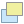
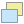
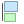
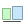

Docs for ‘QGIS testing’. Visit http://docs.qgis.org/2.14 for QGIS 2.14 docs and translations.
Overview of the Print Composer¶
The Print Composer provides growing layout and printing capabilities. It allows you to add elements such as the QGIS map canvas, text labels, images, legends, scale bars, basic shapes, arrows, attribute tables and HTML frames. You can size, group, align, position and rotate each element and adjust their properties to create your layout. The layout can be printed or exported to image formats, PostScript, PDF or to SVG (export to SVG is not working properly with some recent Qt4 versions; you should try and check individually on your system). You can save the layout as a template and load it again in another session. Finally, generating several maps based on a template can be done through the atlas generator.
Sample Session¶
Before you start to work with the Print Composer, you need to load some raster
or vector layers in the QGIS map canvas and adapt their properties to suit your
own convenience. After everything is rendered and symbolized to your liking,
click the  New Print Composer icon in the toolbar or
choose File ‣ New Print Composer. You will be prompted to
choose a title for the new Composer.
New Print Composer icon in the toolbar or
choose File ‣ New Print Composer. You will be prompted to
choose a title for the new Composer.
To demonstrate how to create a map please follow the next instructions.
- On the left side, select the
 Add new map toolbar button
and draw a rectangle on the canvas holding down the left mouse button.
Inside the drawn rectangle the QGIS map view to the canvas.
Add new map toolbar button
and draw a rectangle on the canvas holding down the left mouse button.
Inside the drawn rectangle the QGIS map view to the canvas. - Select the
 Add new scalebar toolbar button and click
with the left mouse button on the Print Composer canvas. A scalebar will be
added to the canvas.
Add new scalebar toolbar button and click
with the left mouse button on the Print Composer canvas. A scalebar will be
added to the canvas. - Select the
 Add new legend toolbar button and draw a
rectangle on the canvas holding down the left mouse button.
Inside the drawn rectangle the legend will be drawn.
Add new legend toolbar button and draw a
rectangle on the canvas holding down the left mouse button.
Inside the drawn rectangle the legend will be drawn. - Select the Select/Move item icon to select the map on the canvas and move it a bit.
- While the map item is still selected you can also change the size of the map item. Click while holding down the left mouse button, in a white little rectangle in one of the corners of the map item and drag it to a new location to change it’s size.
- Click the Item Properties tab on the left lower panel and find the setting for the orientation. Change the value of the setting Map orientation to ‘15.00° ‘. You should see the orientation of the map item change.
- Now, you can print or export your print composition to image formats, PDF or to SVG with the export tools in Composer menu.
- Finally, you can save your print composition within the project file with the
 Save Project button.
Save Project button.
{kind=link}
You can add multiple elements to the Composer. It is also possible to have more than one map view or legend or scale bar in the Print Composer canvas, on one or several pages. Each element has its own properties and, in the case of the map, its own extent. If you want to remove any elements from the Composer canvas you can do that with the Delete or the Backspace key.
The Composer Manager¶
The Composer Manager is the main window to manage print composers in the project.
It helps you add new print composer, duplicate an existing one, rename or delete it.
To open the composer manager dialog, click on the  Composer Manager button in the toolbar or choose Composer
‣ Composer Manager. It can also be reached from the main window of QGIS with
Project ‣ Composer Manager.
Composer Manager button in the toolbar or choose Composer
‣ Composer Manager. It can also be reached from the main window of QGIS with
Project ‣ Composer Manager.
Figure Composer Manager:
The Print Composer Manager
The composer manager lists in its upper part all the available print composers in the project. The bottom part shows tools that help to:
- show the selected composer(s): you can open multiple print composers in one-click
- duplicate the selected composer (available only if one print composer is selected): it creates a new composer using the selected composer as template. You’ll be prompted to choose a new title for the new composer
- rename the composer (also available only if one print composer is selected): You’ll be prompted to choose a new title for the composer. Note that you can also rename the composer by double-clicking on its title in the upper part
- remove the composer: the selected print composer(s) will be deleted from the project.
With the Composer Manager, it’s also possible to create new print composers as an empty composer or from a saved template. By default, QGIS will look for templates in user directory (~/.qgis2/composer_templates) or application’s one (ApplicationFolder/composer_templates). QGIS will retrieve all the available templates and propose them in the combobox. The selected template will be used to create a new composer when clicking Add button. You can also save composer templates in another folder. Choosing specific in the template list offers the ability to select such template and use it to create a new print composer.
Menus, tools and panels of the print composer¶
Opening the Print Composer provides you with a blank canvas that represents the paper surface when using the print option. Initially you find buttons on the left beside the canvas to add map composer items: the current QGIS map canvas, text labels, images, legends, scale bars, basic shapes, arrows, attribute tables and HTML frames. In this toolbar you also find toolbar buttons to navigate, zoom in on an area and pan the view on the composer and toolbar buttons to select a map composer item and to move the contents of the map item.
Figure_composer_overview shows the initial view of the Print Composer before any elements are added.
Figure Composer Overview:
Print Composer
On the right beside the canvas you find two panels. The upper panel holds the tabs Items and Command History and the lower panel holds the tabs Composition, Item properties and Atlas generation.
- The Items tab provides a list of all map composer items added to the canvas.
- The Command history tab displays a history of all changes applied to the Print Composer layout. With a mouse click, it is possible to undo and redo layout steps back and forth to a certain status.
- The Composition tab allows you to set paper size, orientation, the page
background, number of pages and print quality for the output file in dpi. Furthermore,
you can also activate the
 Print as raster checkbox. This means
all items will be converted to raster before printing or saving as PostScript or PDF.
In this tab, you can also customize settings for grid and smart guides.
Print as raster checkbox. This means
all items will be converted to raster before printing or saving as PostScript or PDF.
In this tab, you can also customize settings for grid and smart guides. - The Item Properties tab displays the properties for the selected item. Click the Select/Move item icon to select an item (e.g., legend, scale bar or label) on the canvas. Then click the Item Properties tab and customize the settings for the selected item.
- The Atlas generation tab allows you to enable the generation of an atlas for the current Composer and gives access to its parameters.
In the bottom part of the Print Composer window, you can find a status bar with mouse position, current page number, a combo box to set the zoom level, the number of selected items if applicable and, in the case of atlas generation, the number of features.
In the upper part of the Print composer window, you can find menus and other toolbars. All Print Composer tools are available in menus and as icons in a toolbar. See a list of tools in table_composer_1.
The toolbars and the tabs can be switched off and on using the right mouse button over any toolbar or through View ‣ Toolbars or View ‣ Panels.
Tools¶
| Icon | Purpose | Icon | Purpose |
|---|---|---|---|
|
Save Project | |
New Composer |
 |
Duplicate Composer | |
Composer Manager |
 |
Load from template |  |
Save as template |
 |
Print or export as PostScript |  |
Export to an image format |
 |
Export print composition to SVG |  |
Export as PDF |
 |
Revert last change |  |
Restore last change |
 |
Zoom to full extent |  |
Zoom to 100% |
 |
Zoom in | |
Zoom out |
 |
Refresh View | ||
 |
Pan |  |
Zoom to specific region |
| Select/Move item in print composition |  |
Move content within an item | |
|
Add new map from QGIS map canvas |  |
Add image to print composition |
 |
Add label to print composition | |
Add new legend to print composition |
|
Add scale bar to print composition |  |
Add basic shape to print composition |
 |
Add arrow to print composition |  |
Add attribute table to print composition |
 |
Add an HTML frame |  |
Add nodes shape to print composition |
 |
Edit a nodes shape | ||
 |
Group items of print composition |  |
Ungroup items of print composition |
| Lock Selected Items |  |
Unlock All items | |
|  | Raise selected items |  | Lower selected items |
 |
Move selected items to top |  |
Move selected items to bottom |
|  | Align selected items left |  |
Align selected items right |
 |
Align selected items center |  |
Align selected items center vertical |
 |
Align selected items top |  | Align selected items bottom |
| Preview Atlas |  |
First Feature | |
 |
Previous Feature |  |
Next Feature |
 |
Last feature | |
Print Atlas |
|
Export Atlas as Image |  |
Atlas Settings |
{kind=link}
{kind=link}
{kind=link}
{kind=link}
{kind=link}
{kind=link}
Table Composer 1: Print Composer Tools
Composer Menu¶
With the Composer ‣ Save Project action, you can save the project file directly from the print composer window. The Composer menu also provides actions to:
- Create a new and blank print composer with New Composer...
- Duplicate Composer... : Create a new print composer
by duplicating the current one
- Open the Composer Manager...
- Print Composers... : Open an existing print composer
Once the layout is designed, with Save as template
and Add items from template icons, you can save
the current state of a Print Composer session as a .qpt template
and load its item again in another session.
In the Composer menu, there are also powerful ways to share
geographical information produced with QGIS that can be included in reports or
published. These tools are Export as Image...,
Export as PDF..., Export as
SVG... and Print....
View Menu¶
Navigation Tools¶
To navigate in the canvas layout, the Print Composer provides some general tools:
- Zoom In
 Zoom Out
Zoom Out- Zoom Full
- Zoom to 100%
- Refresh view (if you find the view in an inconsistent state)
- Show Grid behind items.
- Snap Grid to snap items on the grid.
- Show Guides to help user to align items. These are red line that you can click in the rule (above or at the left side of the layout) and drag and drop to the desired location.
- Snap Guides: allows user to snap items to the guides,
- Smart Guides: uses other composer items as guides to dynamically snap to as user moves or reshapes an item.
- Clear Guides to remove all current guides.
- Show Bounding box around the items.
- Show Rules around the layout.
- Show Pages or set up pages to transparent. Often composer is used to create non-print layouts, e.g. for inclusion in presentations or other documents, and it’s desirable to export the composition using a totally transparent background. It’s sometimes referred to as “infinite canvas” in other editing packages.
- Toggle Full Screen makes the composer window to full screen.
- Hide Panels hides/shows the right panel
- Panels lists all panels available to hide/show them.
- Toolbars same as above for toolbars.
You can change the zoom level also using the mouse wheel or the combo box in the status bar. If you need to switch to pan mode while working in the Composer area, you can hold the Spacebar or the mouse wheel. With Ctrl+Spacebar, you can temporarily switch to Zoom In mode, and with Ctrl+Shift+Spacebar, to Zoom Out mode.
Hide and Show Panels¶
To maximise the space available to interact with a composition you can use
View ‣ Hide panels or press F10.
Note
It’s also possible to switch to a full screen mode to have more space to
interact by pressing F11 or using View ‣
Toggle full screen.
Composition Tab¶
Page size and settings¶
In the Composition tab, you can define the global settings of the current composition.
Figure Composition 1:
Composition settings in the Print Composer
You can choose one of the Presets formats for your paper sheet, or enter your custom width, height and units. You can also choose the page Orientation to use.
Composition can be divided into several pages. For instance, a first page can show a map canvas, and a second page can show the attribute table associated with a layer, while a third one shows an HTML frame linking to your organization website. Set the Number of pages to the desired value. you can also custom the Page Background with the color or the symbol you want.
The Page size options apply to all the pages in the composition. However, you can modify the values using the data defined override options (see Data Defined Override Buttons).
A custom page size can also be set, using the Resize page tool. This creates an unique page composition, resizes the page to fit the current contents of the composition (with optional margins).
Export settings¶
You can define a resolution to use for all exported maps in Export
resolution. This setting can however be overridden each time you are exporting a map.
When checked, print as raster means all elements will be
rasterized before printing or saving as PostScript or PDF.
While exporting to an image file format, you can choose to generate a world file
by checking World file on and select a map item.
The world file is created beside the exported map, has same name and contains
information to easily georeference it.
Figure Composition 2:
Export Settings in the Print Composer
Grid and guides¶
You can put some reference marks on your composition paper sheet to help you place some items. These marks can be:
- simple lines (called Guides) put at the position you want. To do that, ensure that Show Rulers and Show Guides in View menu are checked. Then, click and drag from within the ruler to the paper sheet. A vertical or horizontal line is added to the paper and you can set its position following the coordinates displayed at the left bottom of the composer dialog.
- or regular Grid.
Whether grids or guides should be shown is set in View menu. There, you can also decide if they might be used to snap composer items. The Grid and guides section lets you customize grid settings like Grid spacing, Grid offset and Snap tolerance to your need. The tolerance is the maximum distance below which an item is snapped to a grid or a guide.
Figure Composition 3:
Snapping to grids in the Print Composer
In the Options ‣ Composer menu in QGIS main canvas, you can also set the spacing, offset and snap tolerance of the grid as much as its style and color. These options are applied by default to any new print composer.
Command History Tab: Revert and Restore actions¶
During the layout process, it is possible to revert and restore changes. This can be done with the revert and restore tools:
- Revert last change
- Restore last change
This can also be done by mouse click within the Command history tab (see figure_composer_1). The History tab lists the last actions done within the composer. Just select the point you want to revert to and once you do new action all the actions done after the selected one will be removed.
Figure Composer 1:

Command history in the Print Composer
Items Tab¶
The Items tab offers some options to manage selection and visibility of items. All the items added to the print composer canvas are shown in a list and selecting an item makes the corresponding row selected in the list as well as selecting a row does select the corresponding item in the print composer canvas. This is thus a handy way to select an item placed behind another one. Note that a selected row is shown as bold.
For any selected item, you can :
 set it visible or not,
set it visible or not,- lock or unlock its position,
- order its Z position. You can move up and down each item in the list with a click and drag. The upper item in the list will be brought to the foreground in the print composer canvas. By default, a newly created item is placed in the foreground.
- change the name by double-clicking the text.
Once you have found the correct position for an item, you can lock it by ticking the box in column. Locked items are not selectable on the canvas. Locked items can be unlocked by selecting the item in the Items tab and unchecking the tickbox or you can use the icons on the toolbar.